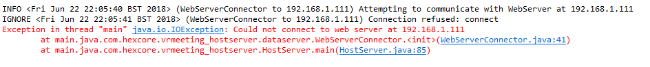

In order to run the VRMeeting Host Server you'll need to first install Java version 1.8.0_111 or later.
You can check your Java version using the command: java -version
If you haven't already then you'll need to pull down the latest distribution version of VRMeeting from The Distribution Repository, This contains the files for the Host Server
In order to use the Host Server you'll need to set the port it will listen on and configure it to be able to communicate with the Web Server for user authentication
Navigate to the /VRMeeting-Host-Server folder in the distribution you've downloaded and you should find a file called properties.txt
Inside of properties.txt you'll need to set the port the HostServer will listen on by changing the value of the ListenOnPort property.
You'll also need to set the property WebServerURL to the URL of the Web Server. This is usually in the form of an IP Address and Port Number combination: ipaddress:port or a domain name
properties.txt fileIf there is not a file called properties.txt in the directory /VRMeeting-Host-Server then you'll need to replace it.
You can download the Default Host Server Properties File by right-clicking on the link and clicking Save Link As... and putting this file in the same folder as the VRMeeting-Host-Server.jar
You'll need to make sure that the machine the Host-Server allows TCP connections on the port you've configured it to in the properties.txt file in the previous step
To run the server you need to be in the /VRMeeting-Host-Server directory and execute the following command: java -Xmx2048M -Xms2048M -jar vrmeeting-host-server.jar
When you first go to run the server you'll find you'll be prompted to agree to a disclaimer that the project is not suitable for production environments:

In order to use the server you must agree to this disclaimer by typing the word 'agree' into the console and press enter:
If you encounter the following error when you attempt to run the Host-Server for the first time:
It means the Host-Server could not connect to the Web Server. If this is the case then you'll need to check you entered the correct URL for the Web Server in Step 3
If you still receive this error then you'll need to make sure the Web Server has been properly installed using the Installation Guide
In order for the Web Server to be complete, it needs to know the location of the Host Server.
As such, you'll need to make a note of the IP Address or name, and port for the machine that the Host Server is running on and then refer to the Web Server Installation Guide Step 10 to know what to do with them
The installation should now be complete.
If you see the following output then you'll need to change the port that you're passing into the runtime arguments as the port is already being used by another program.
If you've previously used the VRMeeting_Host_Server on the same port then you'll want to double check that you haven't left it running by accident.
If you see the following output then the VRMeeting_Server Web Server is unavailable to the Host Server. This could be because:
\VRMeeting_Host_Server\target>java -jar vrmeeting.jar 25565 http://localhost:25560
INFO
INFO
Host Server will connect to the web server located at http://localhost:25560
IGNORE
ERROR